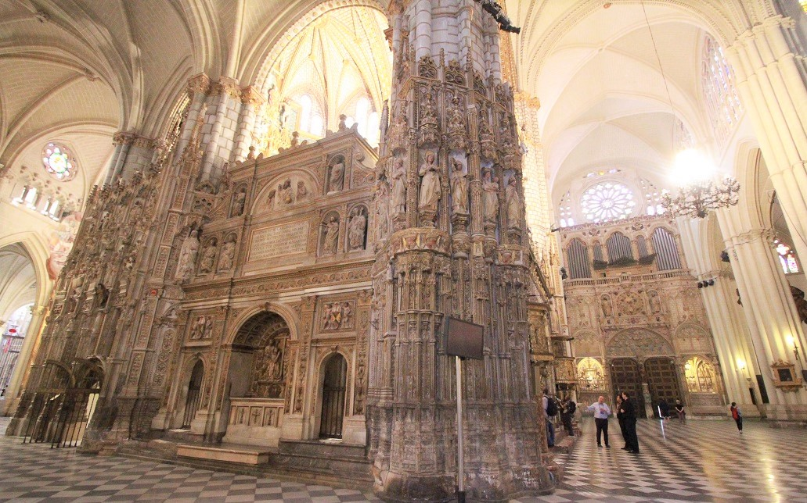

２０１９年秋、スペイン旅行日記
El diario de España
スペイン語初級者の我々が勉強のために書きました。

Introducción
Salida a España
El primer día en España【 Madrid 】
El segundo día en España【 Toledo & Segovia 】
El tercer día en España【 Córdoba 】
El cuarto día en España【 Sevilla 】
El Quinto día en España【 Málaga & Granada 】
El sexto día en España【 Barcelona 】
El séptimo día en España【 Barcelona 】
El octavo día en España【 Girona & Figueres 】
El último día en España【 Barcelona 】
Despues del viaje
Hoteles en España
ciudad
link
Madrid
Tryp Madrid Atocha Hotel
Córdoba
Hotel Mezquita
Sevilla
Hotel Alcántara
Granada
Oyo Hotel Plaza Nueva
Barcelona
Hotel EXE Laietana Palace